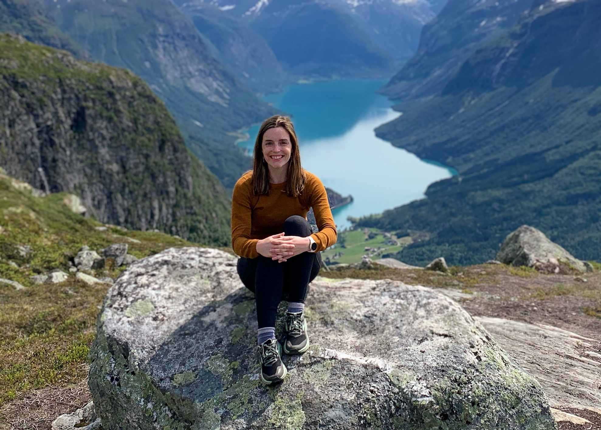

Hello! I am an Assistant Professor in the Department of Mathematics and Statistics at Vassar College. My research interests are in topological data analysis (TDA), computational topology and geometry, and mathematics of data science. I regularly teach undergraduate statistics, data science, and math classes. In addition to research and teaching, I also care about making the scientific community more welcoming and accessible. I contribute to various outreach programs that focus on this. More details can be found in my CV.
Links: CV. (Updated 12/25) google scholar. linkedin.
Email: rbelton@vassar.edu Pronouns: she/her